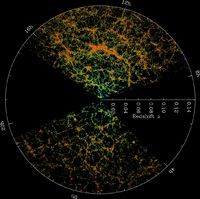
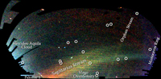
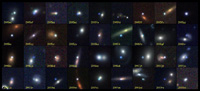

August 15, 2008
|
+ enlarge  |
| Slices through the 3-dimensional map of the distribution of galaxies from the Sloan Digital Sky Survey (SDSS). The earth is at the center, and each point represents a galaxy, typically containing about 100 billion stars. Galaxies are colored according to the ages of their stars, with the redder, more strongly clustered points showing galaxies that are made of older stars. The outer circle is at a distance of two billion light years. The region between the wedges was not mapped by the SDSS because dust in our own Galaxy obscures the view of the distant universe in these directions. The lower slice is thinner than the upper slice, so it contains fewer galaxies. (Credit: M. Blanton and SDSS) |
|
+ enlarge  |
|
A map of stars in the outer regions of the Milky Way Galaxy,
derived from the SDSS images of the northern sky, shown in a
Mercator-like projection. The color indicates the distance of the stars,
while the intensity indicates the density of stars on the sky.
Structures visible in this map include streams of stars
torn from the Sagittarius dwarf galaxy, a smaller 'orphan' stream
crossing the Sagittarius streams, the 'Monoceros Ring' that encircles
the Milky Way disk, trails of stars being stripped from the
globular cluster Palomar 5, and excesses of stars found towards
the constellations Virgo and Hercules. Circles enclose
new Milky Way companions discovered by the SDSS; two of these
are faint globular star clusters, while the others are faint
dwarf galaxies. (Credit: V. Belokurov and SDSS)
|
|
+ enlarge  |
| A mosaic showing 36 of the the 500+ Type Ia supernovae discovered by the SDSS-II Supernova Survey. Each image is centered on the supernova, which usually stands out as a bright point near or within the galaxy that hosts it. The light of the supernova, powered by the thermonuclear explosion of a single white dwarf star, can outshine that of the tens of billions of stars in its host galaxy. A mosaic of 484 SDSS-II supernovae can be found here. (Credit: B. Dilday and the SDSS) |
CHICAGO -- After a decade of construction and eight years of operation (SDSS-I, 2000-2005; SDSS-II, 2005-2008), the Sloan Digital Sky Survey (SDSS) completed its observations in mid-July and will release its final data set to the public in October. SDSS-III, a six-year program composed of four new surveys, has now begun, using the same telescope.
"I'm glad we didn't know at the beginning how hard it would be and how long it would take," said SDSS Project Scientist Jim Gunn, the Princeton astronomer who has guided the project since its inception. "But now that we've finally accomplished what we set out to do, and much more besides, it seems worth all the effort and all the headaches along the way."
Using a dedicated 2.5-meter diameter telescope equipped with two specialized instruments -- a 125-Megapixel digital camera and spectrographs that observe 640 stars and galaxies at a time -- SDSS has completed its original goals by making deep, multi-color images covering more than one-quarter of the sky and measuring the distances to nearly one million galaxies and over 100,000 quasars, thus creating the largest ever 3-dimensional maps of cosmic structure.
"What amazes me is the huge range of the discoveries that have come from SDSS data," said SDSS-II Director Richard Kron, an astronomer at the University of Chicago and Fermilab. "We designed it primarily as a survey to map the distribution of galaxies and quasars, but it's also had a huge impact on the study of stars, the structure of our own Galaxy, and even solar system objects."
Those achievements are being celebrated this weekend at an international symposium titled "The Sloan Digital Sky Survey: Asteroids to Cosmology," hosted by the Kavli Institute for Cosmological Physics at the University of Chicago. In more than 80 presentations, astronomers from around the globe will describe new discoveries about stars, galaxies, and the cosmos, from the SDSS and from some of the other ambitious surveys that it helped inspire.
Astronomers are using SDSS images and maps to understand the origins of galaxies and the properties of dark matter, the invisible material whose gravity binds stars together in galaxies. The gravity of dark matter also arranges the galaxies themselves into filamentary strands that span hundreds of millions of light years, forming a network interleaved with low density tunnels and voids. Observations of the most distant SDSS quasars probe the 'epoch of reionization,' when radiation from the first galaxies burned through the fog of intergalactic neutral hydrogen and made the universe transparent to ultraviolet light. Quasars, the most luminous objects in the universe, are powered by hot gas falling onto supermassive black holes up to ten billion times the mass of the sun. Astronomers are combining SDSS data with measurements from space-based X-ray and infrared telescopes to trace the growth of supermassive black holes through cosmic history, to investigate the impact of the black holes on the galaxies in which they reside, and to discover the triggers that can cause a black hole to flare into brilliance after lying dormant for millions or billions of years.
The biggest puzzle in cosmology today, according to University of Chicago and Fermilab researcher Joshua Frieman, is that the expansion of the universe is speeding up over time, despite the gravitational pull of all the normal matter and dark matter it contains. "Either we don't understand the way gravity works on the scale of the whole universe," Frieman says, "or space is pervaded by some form of 'dark energy' that produces repulsive gravity."
The nature of dark energy remains a mystery, and SDSS researchers have been trying to pin down its properties by using the survey's giant imaging camera to repeatedly scan the same area of sky, discovering supernova explosions whose brightness can be used to trace the history of the universe's expansion with high precision. By providing detailed measurements of objects as far away as four billion light years, the SDSS-II supernova survey perfectly complements surveys from larger telescopes that find fainter, more distant supernovae over smaller areas of sky, Frieman explained.
Closer to home, astronomers have used SDSS images to discover a dozen new galaxies that are satellite companions of the Milky Way, most of them much fainter than any of the ten previously known satellites. Star maps from SDSS images show that the outer reaches of the Milky Way are criss-crossed with trails and streams of stars, probably the stretched-out remnants of other satellite galaxies that were torn apart long ago by the Galaxy's gravitational forces.
"Even the early SDSS images showed that the real Milky Way Galaxy is much more complicated than the one I learned about in graduate school," said Heidi Newberg of the Rensselaer Polytechnic Institute. Newberg initiated SEGUE (the Sloan Extension for Galactic Understanding and Exploration), one of three surveys that make up SDSS-II, which has imaged new areas of sky and has used the SDSS spectrographs to measure the motions and chemical compositions of 240,000 Milky Way stars. "SEGUE has already shown us that there are important clues to the history of the Galaxy and the properties of dark matter encoded in the motions of Milky Way stars," said Newberg. "We expect to keep making important discoveries in the data for years to come."
SDSS-II observations ended on July 14. On July 15, SDSS-III began. "The ability of the SDSS facility to simultaneously measure spectra of hundreds of objects over a wide area of sky remains a powerful tool for astronomy," said SDSS-III Director Daniel Eisenstein, an astronomer at the University of Arizona. SDSS-III is a set of four ambitious new spectrosopic surveys, addressing a wide range of scientific questions.
The biggest of the four surveys will use a novel technique to study the properties of dark energy. "Sound waves that travel in the early universe imprint a characteristic scale on the distribution of galaxies, which was first detected by the SDSS," said Eisenstein. "We can use this scale as a 'standard ruler' to measure the expansion history of the universe, much as supernovae have been used as standard candles." SDSS-III will map the clustering of the most luminous galaxies over a volume seven times larger than SDSS-I and II, Eisenstein explained, enabling it measure the length of this cosmic ruler with unprecedented precision.
Two other SDSS-III surveys will map the structure of the Milky Way, one in visible light, like SEGUE, and one in infrared light, which penetrates the interstellar dust that obscures our view of the inner Galaxy. A fourth survey will monitor more than 10,000 stars for the small 'wobble' caused by orbiting giant planets, providing the most comprehensive census to date of giant, Jupiter-like planets around other stars.
SDSS-III is funded by contributions from the Alfred P. Sloan Foundation, the U.S. National Science Foundation and Department of Energy, and participating institutions in the U.S., South America, Europe, and Asia. "Throughout its life, the SDSS has been a remarkable example of cooperation among public and private funding agencies and individual institutions around the world, to enable science that would not otherwise be possible," said Richard Kron. In recognition of the pivotal and generous support of the Alfred P. Sloan Foundation through all phases of the SDSS, the 2.5-meter telescope at Apache Point Observatory will be formally named The Sloan Foundation Telescope at the Symposium.
More than any single discovery, Jim Gunn is proud of the quality and scope of the SDSS data sets. "Visible light is where we understand the universe best, but when we began the SDSS, there were no sensitive, well characterized, visible-light catalogs that covered a large area of sky," he said. "Now we have multi-color images of 300 million celestial objects, 3-dimensional maps and detailed properties of well over a million of them, and it's all publicly available online. That changes everything."
SDSS is managed by the Astrophysical Research Consortium for the Participating Institutions. The SDSS-II Participating Institutions are the American Museum of Natural History, Astrophysical Institute Potsdam, University of Basel, University of Cambridge, Case Western Reserve University, University of Chicago, Drexel University, Fermilab, the Institute for Advanced Study, the Japan Participation Group, Johns Hopkins University, the Joint Institute for Nuclear Astrophysics, the Kavli Institute for Particle Astrophysics and Cosmology, the Korean Scientist Group, the Chinese Academy of Sciences (LAMOST), Los Alamos National Laboratory, the Max-Planck-Institute for Astronomy (MPIA), the Max-Planck-Institute for Astrophysics (MPA), New Mexico State University, Ohio State University, University of Pittsburgh, University of Portsmouth, Princeton University, the United States Naval Observatory, and the University of Washington.
Funding for SDSS-III has been provided by the Alfred P. Sloan Foundation, the Participating Institutions, the National Science Foundation, and the U.S. Department of Energy. The SDSS-III Consortium is still growing; at present, the Participating Institutions are the University of Arizona, the Brazilian Participation Group, University of Cambridge, University of Florida, the French Participation Group, the German Participation Group, the Joint Institute for Nuclear Astrophysics (JINA), Johns Hopkins University, Lawrence Berkeley National Laboratory (LBNL), the Max Planck Institute for Astrophysics (MPA), New Mexico State University, New York University, Ohio State University, University of Portsmouth, Princeton University, the Spanish Participation Group, University of Tokyo, University of Utah, University of Virginia, and the University of Washington. The SDSS-III Web Site is http://www.sdss3.org/
{kind=link}